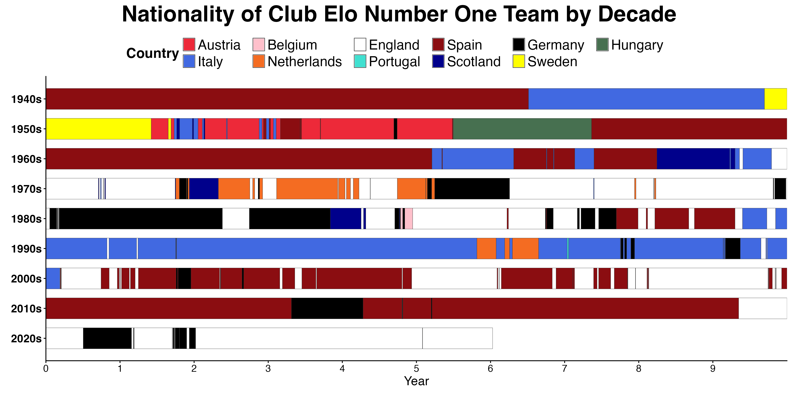

| Year | Winners | League Pos |
|---|---|---|
| 1980 | Nottingham Forest | 5 |
| 1981 | Liverpool | 5 |
| 2000 | Real Madrid | 5 |
| 2005 | Liverpool | 5 |
| 1985 | Juventus | 6 |
| 2012 | Chelsea | 6 |
| 1975 | Bayern Munich | 10 |
| 1982 | Aston Villa | 11 |
Which British teams have been the best in Europe?
football
statistics
Elo ratings
A review of the number one team by Elo rating over the last 85 years.
As a football nerd, I love playing around on the Club Elo website. One little feature I noticed is that each club’s page shows their highest rating, and when they most recently had that rating. So it got me wondering: which British teams have reached #1 in the Elo rankings?
We know which British teams have been champions of Europe: Celtic, Manchester United, Liverpool, Nottingham Forest, Aston Villa, Chelsea and Manchester City. But that doesn’t necessarily mean reaching #1 in Elo; Villa, for example, only reached a ranking of 6th in the early 80s despite winning the English league title and European Cup. Why so low? Because Villa had finished no better than 7th in the three seasons before their title, and finished 11th the following year - still the lowest ever league position for any winner of the European Cup or Champions League in the 70 years of the competition.
Villa fans won’t care of course, because the only real thing about sport is winning games and winning trophies; the notion of being a “good team” is an abstract concept. Nonetheless, I like the Club Elo ratings as they provide an objective measure to compare teams, and they generally pass the eye test. In fact, Villa fans will be pleased to know they are currently ranked in 8th place, just two points behind Real Madrid.
| Rank | Club | Elo |
|---|---|---|
| 1 | Arsenal | 2062 |
| 2 | FC Bayern | 1996 |
| 3 | Paris SG | 1956 |
| 4 | Manchester City | 1954 |
| 5 | Liverpool | 1949 |
| 6 | Barcelona | 1942 |
| 7 | Real Madrid | 1923 |
| 8 | Aston Villa | 1921 |
| 9 | Internazionale | 1914 |
| 10 | Chelsea | 1896 |
At first I was going to entitle this article “Which British teams have been the best in the world?” But of course, the Club Elo ratings don’t include teams outside Europe, which arguably wouldn’t affect the top teams today but certainly would have at various points in history. Even if the data included results from South American club football, would there be enough crossover between the two continents to make meaningful combined ratings? Doubtful.
Before I look at the British number ones, I think it’s interesting to see which countries have dominated across each era.

The Club Elo rankings begin at the start of 1940, although it’s not clear how the first set of ratings are devised, or how much inter-league mixing there was prior to the start of the European Cup era in 1955. Certainly there were international club competitions such as the Latin Cup and Mitropa Cup, as well as various club friendlies. Famously, Wolverhampton Wanderers were announced as Champions of the World by the Daily Mail in 1954 after beating Hungarian champions Honved 3-2.
Spanish teams of course had the advantage in the early 1940s that everyone else was busy fighting World War Two. Once that conflict was decided, Italy soon took over top spot with the great Torino side reigning for more than two years before the tragic plane crash that killed their entire team in 1949.
It would take too long to comment on every different spell at the top, but the broad trends can be seen: the coffee shops of Vienna and Budapest in the 50s; the Real Madrid team that won the first five European Cups; the total football Dutch era; the English and German dominance of the 70s and 80s; the almost complete dominance of the 1990s by Italy; and the back and forth between Spain and England since the turn of the century, with occasional interruptions from Bayern.
Every team has an interesting story to tell, and maybe I will take a similar look at the non-British teams in future. But for now, let’s run through each of the twelve British sides that reached top spot: how many days have been #1, and when they did it.
12. Nottingham Forest: 14 Days
October 1979
It’s one of the most ridiculous runs in football history. Brian Clough, having already won the league with unheralded Derby County in 1972, took Nottingham Forest to promotion from the second division, to English champions, to European champions then European champions again in four consecutive seasons between 1976-77 and 1979-80. They also won the league cup in 1978 and 1979. Despite this success, Forest only briefly reached number one of the Elo rankings in October 1979, such was the dominance of their rivals Liverpool during this era.
11. Tottenham Hotspur: 18 Days
January 1985
It may not be a surprise that Spurs have reached the top of the rankings, but it’s a surprise when this happened. The all-time great Spurs side of the 1960s actually never made it to the top spot, as English teams still had to catch up on the great European sides like Real Madrid and Benfica. But Spurs did sneak into top spot in January 1985.
| Rank | Club | Elo |
|---|---|---|
| 1 | Tottenham Hotspur | 1836 |
| 2 | Liverpool | 1830 |
| 3 | Anderlecht | 1814 |
| 4 | FC Bayern | 1812 |
| 5 | Manchester United | 1812 |
Having won the 1984 UEFA Cup Final against a strong Anderlecht side who themselves reached #1 that year, Spurs began the 1984-1985 season well and topped the table going into the new year after winning at local rivals Arsenal. But Everton put together an incredible run of 16 wins and two draws from 18 matches to surge to the title and also take over Spurs’ short-lived Elo #1 ranking.
10. Hibernian: 26 Days
1951-1952
With all due respect, I was not expecting to see Hibernian on this list. As mentioned earlier, it’s not clear exactly what international club competitions are included in the early Elo calculations. But this was clearly a fantastic Hibs side, winning the Scottish championship in 1948, 1951 and 1952; Celtic & Rangers had won all but one of the league titles in the previous 43 years. Logan Roy would be proud!
9. Arsenal: 165 Days
1971, 1991, 2004, 2025-2026
Although Arsenal have reached #1 at four different times in their history, it is actually the current side that has been there the longest. In 1971, despite winning the double, they only reached the top spot for a total of 14 days, and in 1991 after hosing up in the league they only managed two days at the top, such had England’s stock fallen during the Heysel ban.
For all his domestic success at Arsenal, Arsene Wenger never really cracked Europe, and he only reached #1 for four days in 2004. So it is Arteta, with a current run of 145 days that doesn’t look like ending any time soon, who has by far the longest spell in top spot. Can he now add the trophies to match?
| Manager | Days at #1 |
|---|---|
| Mikel Arteta | 145 |
| Bertie Mee | 14 |
| Arsene Wenger | 4 |
| George Graham | 2 |
8. Aberdeen: 166 Days
1983-1984
Alex Ferguson’s name is now synonymous with Manchester United’s most successful era, but his time at Aberdeen was also prolific. Fergie took over in 1978 and led Aberdeen to league finishes of 4-1-2-2-3-1-1-4, as well as winning four Scottish FA Cups and the 1983 UEFA Cup Winners’ Cup where they beat Real Madrid in the final. The Dons topped the rankings for 152 straight days between November 1983 and April 1984.
7. Everton: 378 Days
1969-1970, 1985-1987
Everton have been top dogs in two eras. Their title-winning side of 1969-1970 held the #1 spot for a total of 154 days, followed by a lean spell and then the great Everton side of the 1980s. The Toffees won the 1984 FA Cup and then in 1985, as mentioned in the Spurs section earlier, they went on a brilliant run after Christmas, winning 16 of 18 games to romp to the league title as well as winning the Cup Winners’ Cup and losing the FA Cup final to Manchester United in extra time. Bearing in mind the fixture load, it has to be one of the most impressive runs in English football history.
Everton followed this up with second place in 1986 (Gary Lineker’s only season at the club) and then won the league again in 1987. Sadly, Everton were big losers from English clubs’ European ban following the Heysel disaster. In an era where England had won seven of the previous nine European Cup finals, they obviously would have had a great chance - and the fact neither of the champions in those two seasons were particularly strong (Steaua Bucharest and PSV Eindhoven) only backs up the case.
| Rank | Club | Elo |
|---|---|---|
| 1 | Liverpool | 1898 |
| 2 | Everton | 1895 |
| 3 | Real Madrid | 1877 |
| 4 | Bayern | 1868 |
| 5 | Werder | 1823 |
| 6 | Juventus | 1815 |
| 7 | Barcelona | 1808 |
| ⋮ | ⋮ | ⋮ |
| 16 | Steaua | 1769 |
| Rank | Club | Elo |
|---|---|---|
| 1 | Real Madrid | 1928 |
| 2 | Liverpool | 1919 |
| 3 | Bayern | 1870 |
| 4 | Everton | 1853 |
| 5 | Man United | 1851 |
| 6 | PSV | 1844 |
| ⋮ | ⋮ | ⋮ |
| 31 | Benfica | 1724 |
6. Celtic: 533 Days
1968-1972
Famously, Celtic were the first British team to win the European Cup, and did so with a team comprised entirely of players born within a 30-mile radius of Glasgow. Almost as famous, or infamous, was their subsequent Intercontinental Cup tie against Racing Club of Argentina, marred by foul play and culminating in six players being sent off in the deciding playoff match.
Although this Celtic team is predominantly associated with those two competitions, they held reached #1 in the Elo ratings in all of the years from 1968 through to 1972. Celtic won nine consecutive Scottish titles from 1965-1966 to 1973-1974, adding four Scottish FA Cups and five Scottish League Cups in the same period. Scottish domestic success can sometimes be scoffed at due to the lack of competition north of the border, but Celtic showed their pedigree in Europe, winning the European Cup in 1967 as well as losing the 1970 final to Feyenoord via a 117th-minute extra time goal. They also lost to eventual champions Milan in the 1969 quarter-finals, and likewise to Ajax in the 1971 quarter-finals, then lost to Inter on penalties in the 1972 semis. They were no flash in the pan.
5. Leeds United: 575 Days
1969-1971, 1973-1974
Arguably the great unheralded team of English football, Leeds were champions of England in 1969 and 1974, the years that bookend their spells atop the Elo rankings. Despite all their success, this Leeds team are probably defined more by what they didn’t win than what they did win. They were runners-up in the league in three consecutive years from 1970 to 1972, describe near-misses. Arsenal 71, Derby 72
Describe European Cup final near-misses as well as semi (Celtic 1970) (Milan CWC final 1973 fix) (1975 lost to Bayern; already in decline though, 10th v 9th! Where were they both in Elo at this time? Peter Lorimer goal? Bremner offside.). And Two FA Cup final defeats: Chelsea replay and Sunderland big upset.
4. Chelsea: 664 Days
2004-2009
The history of Chelsea can be neatly divide into two eras: Before Roman, and After Roman. Prior to the establishment of the Premier League, Chelsea FC were an afterthought in English football, with only four top-4 finishes in the club’s history, with one league trophy and one FA Cup.
Since the arrival of Roman Abramovich in 2004, Chelsea have won five league titles, five FA Cups, three league cups, two Champions Leagues, two Europa Leagues, as well as two FIFA Club World Cups, for whatever they are worth.
The golden era for Chelsea was undoubtedly under Jose Mourinho. The league was simply not ready to compete with a club that blew everyone out of the water financially, and a team that played relatively cautious, defensive football while having the best players. It just wasn’t an approach that had been seen before in a country that still largely deployed an open 4-4-2 formation, certainly at home.
Ironically, it was the equally pragmatic Rafa Benitez at Liverpool who proved to be Mourinho’s nemesis. In all three of Mourinho’s seasons at Chelsea, Benitez knocked them out of Europe: twice directly (in the semi-finals in 2005 and 2007) and indirectly in 2005-2006, when they were drawn in the same group which Liverpool finished top of, causing Chelsea to draw eventual winners Barcelona in the second round.
| Rank | Club | Elo |
|---|---|---|
| 1 | Chelsea | 1961 |
| 2 | Milan | 1927 |
| 3 | Arsenal | 1907 |
| 4 | Lyon | 1887 |
| 5 | Barcelona | 1886 |
| ⋮ | ⋮ | ⋮ |
| 14 | Liverpool | 1800 |
Chelsea spent a large portion of the Mourinho era as the #1 team in the Elo ratings, and also reached top spot under Avram Grant and Luis Felipe Scolari as the money continued to flow. Surprisingly, despite the huge spending continuing both under Abramovich and his successors the Clearlake Capital group, they have never reached the top spot since 2009. European success finally came, but with vastly inferior teams to those of their peak years - reminding everyone that knockout football is, after all, knockout football.
3. Manchester United: 992 Days
1999-2003, 2007-2009
Given United’s storied history, it is perhaps surprising that they had to wait until the turn of the century before reaching the number one position. The iconic team of Best, Law and Charlton won the league in 1967 and followed it up with the European Cup in 1968. But they were pipped to the title that year by neighbours Man City, beginning a decline that would result in relegation in 1974 and a long wait until 1993 to finally win their next championship.
After dominating the 1990s in England, United finally cracked the Elo top spot after winning the European Cup in dramatic fashion in 1999 to add to the league and FA Cup they had won that year. They flirted with top spot over the next few seasons, but it was from 2007 to 2009 where they amassed the most days at #1, with the Rooney & Ronaldo team that many observers consider Fergie’s best.
| Rank | Club | Elo |
|---|---|---|
| 1 | Manchester United | 1906 |
| 2 | Lazio | 1905 |
| 3 | Milan | 1874 |
| 4 | FC Bayern | 1873 |
| 5 | Barcelona | 1871 |
| 6 | Juventus | 1851 |
| 7 | Parma | 1850 |
| 8 | Arsenal | 1836 |
| 9 | Roma | 1822 |
| 10 | Bayer Leverkusen | 1818 |
2. Manchester City: 1,127 Days
2021-2024
Much like Chelsea, you can’t really assess the history of Manchester City without thinking of a Before Abu Dhabi era and an After Abu Dhabi era. Prior to 2008 they had two league titles (1937 - relegated next year! - and 1968) and hadn’t won anything since league cup 1976. Since AD, 8 leagues, 3 FA Cups, 6 league cups, CL, club world cup.
Show the Elo rankings on eve of Abu Dhabi takeover
1. Liverpool: 3,481 Days
1972-1974, 1976-1980, 1982, 1984-1991, 2009, 2019-2020, 2022, 2024-2025
It’s not even close! Shanks started it. Win everything 70s and 80s, dueling with Forest and Everton. Surprisingly hit #1 in April 2009 for four days under Rafa, then Klopp era.
Show the table when #1 under Rafa.
Final Word
Talk about eras and how hard it is to reach #1 when your country isn’t dominating. Have to really dominate your league. Liverpool dominated, but others paved the way. Spurs, Celtic, Man Utd, Leeds. The future? PL looks so strong, it seems like whoever is best in PL will be best in Europe, for some time to come.